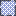

<!doctype html>
<html lang="en">
    <head>
        <meta charset="utf-8">
        <meta http-equiv="X-UA-Compatible" content="IE=edge">
        <meta name="viewport" content="initial-scale=1,user-scalable=no,maximum-scale=1,width=device-width">
        <meta name="mobile-web-app-capable" content="yes">
        <meta name="apple-mobile-web-app-capable" content="yes">
        <link rel="stylesheet" href="css/leaflet.css">
        <link rel="stylesheet" href="css/L.Control.Layers.Tree.css">
        <link rel="stylesheet" href="css/qgis2web.css">
        <link rel="stylesheet" href="css/fontawesome-all.min.css">
        <link rel="stylesheet" href="css/leaflet-control-geocoder.Geocoder.css">
        <link rel="stylesheet" href="css/leaflet-measure.css">
        <style>
        html, body, #map {
            width: 100%;
            height: 100%;
            padding: 0;
            margin: 0;
        }
        </style>
        <title></title>
    </head>
    <body>
        <div id="map">
        </div>
        <script src="js/qgis2web_expressions.js"></script>
        <script src="js/leaflet.js"></script>
        <script src="js/L.Control.Layers.Tree.min.js"></script>
        <script src="js/leaflet-svg-shape-markers.min.js"></script>
        <script src="js/leaflet.rotatedMarker.js"></script>
        <script src="js/leaflet.pattern.js"></script>
        <script src="js/leaflet-hash.js"></script>
        <script src="js/Autolinker.min.js"></script>
        <script src="js/rbush.min.js"></script>
        <script src="js/labelgun.min.js"></script>
        <script src="js/labels.js"></script>
        <script src="js/leaflet-control-geocoder.Geocoder.js"></script>
        <script src="js/leaflet-measure.js"></script>
        <script src="data/TownlandsrevisedBoundaries_1.js"></script>
        <script src="data/Greenway_2.js"></script>
        <script src="data/WayfindingRoutes2_3.js"></script>
        <script src="data/WayfindingDecisionPointsv2copy_4.js"></script>
        <script>
        var map = L.map('map', {
            zoomControl:false, maxZoom:28, minZoom:1
        }).fitBounds([[53.26718149981726,-6.4119623488015804],[53.29565807788025,-6.334411467797234]]);
        var hash = new L.Hash(map);
        map.attributionControl.setPrefix('<a href="https://github.com/tomchadwin/qgis2web" target="_blank">qgis2web</a> &middot; <a href="https://leafletjs.com" title="A JS library for interactive maps">Leaflet</a> &middot; <a href="https://qgis.org">QGIS</a>');
        var autolinker = new Autolinker({truncate: {length: 30, location: 'smart'}});
        // remove popup's row if "visible-with-data"
        function removeEmptyRowsFromPopupContent(content, feature) {
         var tempDiv = document.createElement('div');
         tempDiv.innerHTML = content;
         var rows = tempDiv.querySelectorAll('tr');
         for (var i = 0; i < rows.length; i++) {
             var td = rows[i].querySelector('td.visible-with-data');
             var key = td ? td.id : '';
             if (td && td.classList.contains('visible-with-data') && feature.properties[key] == null) {
                 rows[i].parentNode.removeChild(rows[i]);
             }
         }
         return tempDiv.innerHTML;
        }
        // add class to format popup if it contains media
		function addClassToPopupIfMedia(content, popup) {
			var tempDiv = document.createElement('div');
			tempDiv.innerHTML = content;
			if (tempDiv.querySelector('td img')) {
				popup._contentNode.classList.add('media');
					// Delay to force the redraw
					setTimeout(function() {
						popup.update();
					}, 10);
			} else {
				popup._contentNode.classList.remove('media');
			}
		}
        var zoomControl = L.control.zoom({
            position: 'topleft'
        }).addTo(map);
        var measureControl = new L.Control.Measure({
            position: 'topleft',
            primaryLengthUnit: 'meters',
            secondaryLengthUnit: 'kilometers',
            primaryAreaUnit: 'sqmeters',
            secondaryAreaUnit: 'hectares'
        });
        measureControl.addTo(map);
        document.getElementsByClassName('leaflet-control-measure-toggle')[0].innerHTML = '';
        document.getElementsByClassName('leaflet-control-measure-toggle')[0].className += ' fas fa-ruler';
        var bounds_group = new L.featureGroup([]);
        function setBounds() {
        }
        map.createPane('pane_GoogleEarthSatellite_0');
        map.getPane('pane_GoogleEarthSatellite_0').style.zIndex = 400;
        var layer_GoogleEarthSatellite_0 = L.tileLayer('https://mt1.google.com/vt/lyrs=s&x={x}&y={y}&z={z}', {
            pane: 'pane_GoogleEarthSatellite_0',
            opacity: 1.0,
            attribution: '',
            minZoom: 1,
            maxZoom: 28,
            minNativeZoom: 0,
            maxNativeZoom: 19
        });
        layer_GoogleEarthSatellite_0;
        map.addLayer(layer_GoogleEarthSatellite_0);
        function pop_TownlandsrevisedBoundaries_1(feature, layer) {
            var popupContent = '<table>\
                    <tr>\
                        <td colspan="2"><strong>name</strong><br />' + (feature.properties['name'] !== null ? autolinker.link(feature.properties['name'].toLocaleString()) : '') + '</td>\
                    </tr>\
                </table>';
            var content = removeEmptyRowsFromPopupContent(popupContent, feature);
			layer.on('popupopen', function(e) {
				addClassToPopupIfMedia(content, e.popup);
			});
			layer.bindPopup(content, { maxHeight: 400 });
        }

        function style_TownlandsrevisedBoundaries_1_0(feature) {
            switch(String(feature.properties['id'])) {
                case '3.0':
                    return {
                pane: 'pane_TownlandsrevisedBoundaries_1',
                opacity: 1,
                color: 'rgba(255,225,1,1.0)',
                dashArray: '',
                lineCap: 'butt',
                lineJoin: 'miter',
                weight: 3.0, 
                fill: true,
                fillOpacity: 1,
                fillColor: 'rgba(255,238,53,0.7529411764705882)',
                interactive: false,
            }
                    break;
                case '1':
                    return {
                pane: 'pane_TownlandsrevisedBoundaries_1',
                opacity: 1,
                color: 'rgba(0,0,0,0.611764705882353)',
                dashArray: '15.0,3.0,6.0,3.0',
                lineCap: 'butt',
                lineJoin: 'miter',
                weight: 3.0, 
                fill: true,
                fillOpacity: 1,
                fillColor: 'rgba(0,30,162,0.43137254901960786)',
                interactive: false,
            }
                    break;
            }
        }
        map.createPane('pane_TownlandsrevisedBoundaries_1');
        map.getPane('pane_TownlandsrevisedBoundaries_1').style.zIndex = 401;
        map.getPane('pane_TownlandsrevisedBoundaries_1').style['mix-blend-mode'] = 'normal';
        var layer_TownlandsrevisedBoundaries_1 = new L.geoJson(json_TownlandsrevisedBoundaries_1, {
            attribution: '',
            interactive: false,
            dataVar: 'json_TownlandsrevisedBoundaries_1',
            layerName: 'layer_TownlandsrevisedBoundaries_1',
            pane: 'pane_TownlandsrevisedBoundaries_1',
            onEachFeature: pop_TownlandsrevisedBoundaries_1,
            style: style_TownlandsrevisedBoundaries_1_0,
        });
        bounds_group.addLayer(layer_TownlandsrevisedBoundaries_1);
        map.addLayer(layer_TownlandsrevisedBoundaries_1);
        function pop_Greenway_2(feature, layer) {
            var popupContent = '<table>\
                    <tr>\
                        <td colspan="2"><strong>id</strong><br />' + (feature.properties['id'] !== null ? autolinker.link(feature.properties['id'].toLocaleString()) : '') + '</td>\
                    </tr>\
                    <tr>\
                        <td colspan="2"><strong>size</strong><br />' + (feature.properties['size'] !== null ? autolinker.link(feature.properties['size'].toLocaleString()) : '') + '</td>\
                    </tr>\
                    <tr>\
                        <td colspan="2"><strong>direction</strong><br />' + (feature.properties['direction'] !== null ? autolinker.link(feature.properties['direction'].toLocaleString()) : '') + '</td>\
                    </tr>\
                </table>';
            var content = removeEmptyRowsFromPopupContent(popupContent, feature);
			layer.on('popupopen', function(e) {
				addClassToPopupIfMedia(content, e.popup);
			});
			layer.bindPopup(content, { maxHeight: 400 });
        }

        function style_Greenway_2_0() {
            return {
                pane: 'pane_Greenway_2',
                opacity: 1,
                color: 'rgba(17,213,30,1.0)',
                dashArray: '',
                lineCap: 'square',
                lineJoin: 'bevel',
                weight: 3.0,
                fillOpacity: 0,
                interactive: true,
            }
        }
        map.createPane('pane_Greenway_2');
        map.getPane('pane_Greenway_2').style.zIndex = 402;
        map.getPane('pane_Greenway_2').style['mix-blend-mode'] = 'normal';
        var layer_Greenway_2 = new L.geoJson(json_Greenway_2, {
            attribution: '',
            interactive: true,
            dataVar: 'json_Greenway_2',
            layerName: 'layer_Greenway_2',
            pane: 'pane_Greenway_2',
            onEachFeature: pop_Greenway_2,
            style: style_Greenway_2_0,
        });
        bounds_group.addLayer(layer_Greenway_2);
        map.addLayer(layer_Greenway_2);
        function pop_WayfindingRoutes2_3(feature, layer) {
            var popupContent = '<table>\
                    <tr>\
                        <td colspan="2"><strong>id</strong><br />' + (feature.properties['id'] !== null ? autolinker.link(feature.properties['id'].toLocaleString()) : '') + '</td>\
                    </tr>\
                </table>';
            var content = removeEmptyRowsFromPopupContent(popupContent, feature);
			layer.on('popupopen', function(e) {
				addClassToPopupIfMedia(content, e.popup);
			});
			layer.bindPopup(content, { maxHeight: 400 });
        }

        function style_WayfindingRoutes2_3_0() {
            return {
                pane: 'pane_WayfindingRoutes2_3',
                opacity: 1,
                color: 'rgba(225,48,17,1.0)',
                dashArray: '',
                lineCap: 'square',
                lineJoin: 'bevel',
                weight: 3.0,
                fillOpacity: 0,
                interactive: true,
            }
        }
        map.createPane('pane_WayfindingRoutes2_3');
        map.getPane('pane_WayfindingRoutes2_3').style.zIndex = 403;
        map.getPane('pane_WayfindingRoutes2_3').style['mix-blend-mode'] = 'normal';
        var layer_WayfindingRoutes2_3 = new L.geoJson(json_WayfindingRoutes2_3, {
            attribution: '',
            interactive: true,
            dataVar: 'json_WayfindingRoutes2_3',
            layerName: 'layer_WayfindingRoutes2_3',
            pane: 'pane_WayfindingRoutes2_3',
            onEachFeature: pop_WayfindingRoutes2_3,
            style: style_WayfindingRoutes2_3_0,
        });
        bounds_group.addLayer(layer_WayfindingRoutes2_3);
        map.addLayer(layer_WayfindingRoutes2_3);
        function pop_WayfindingDecisionPointsv2copy_4(feature, layer) {
            var popupContent = '<table>\
                    <tr>\
                        <td colspan="2"><strong>Dir N</strong><br />' + (feature.properties['Dir N'] !== null ? autolinker.link(feature.properties['Dir N'].toLocaleString()) : '') + '</td>\
                    </tr>\
                    <tr>\
                        <td colspan="2"><strong>Dir E</strong><br />' + (feature.properties['Dir E'] !== null ? autolinker.link(feature.properties['Dir E'].toLocaleString()) : '') + '</td>\
                    </tr>\
                    <tr>\
                        <td colspan="2"><strong>Dir S</strong><br />' + (feature.properties['Dir S'] !== null ? autolinker.link(feature.properties['Dir S'].toLocaleString()) : '') + '</td>\
                    </tr>\
                    <tr>\
                        <td colspan="2"><strong>Dir W</strong><br />' + (feature.properties['Dir W'] !== null ? autolinker.link(feature.properties['Dir W'].toLocaleString()) : '') + '</td>\
                    </tr>\
                    <tr>\
                        <td colspan="2"><strong>Level</strong><br />' + (feature.properties['Level'] !== null ? autolinker.link(feature.properties['Level'].toLocaleString()) : '') + '</td>\
                    </tr>\
                    <tr>\
                        <td colspan="2"><strong>id</strong><br />' + (feature.properties['id'] !== null ? autolinker.link(feature.properties['id'].toLocaleString()) : '') + '</td>\
                    </tr>\
                </table>';
            var content = removeEmptyRowsFromPopupContent(popupContent, feature);
			layer.on('popupopen', function(e) {
				addClassToPopupIfMedia(content, e.popup);
			});
			layer.bindPopup(content, { maxHeight: 400 });
        }

        function style_WayfindingDecisionPointsv2copy_4_0(feature) {
            switch(String(feature.properties['Level'])) {
                case 'Low':
                    return {
                pane: 'pane_WayfindingDecisionPointsv2copy_4',
                radius: 10.0,
                opacity: 1,
                color: 'rgba(41,112,255,1.0)',
                dashArray: '',
                lineCap: 'butt',
                lineJoin: 'miter',
                weight: 2.0,
                fill: true,
                fillOpacity: 1,
                fillColor: 'rgba(255,255,255,1.0)',
                interactive: true,
            }
                    break;
                case 'Greenway':
                    return {
                pane: 'pane_WayfindingDecisionPointsv2copy_4',
                radius: 10.0,
                opacity: 1,
                color: 'rgba(0,166,33,1.0)',
                dashArray: '',
                lineCap: 'butt',
                lineJoin: 'miter',
                weight: 2.0,
                fill: true,
                fillOpacity: 1,
                fillColor: 'rgba(255,255,255,1.0)',
                interactive: true,
            }
                    break;
            }
        }
        map.createPane('pane_WayfindingDecisionPointsv2copy_4');
        map.getPane('pane_WayfindingDecisionPointsv2copy_4').style.zIndex = 404;
        map.getPane('pane_WayfindingDecisionPointsv2copy_4').style['mix-blend-mode'] = 'normal';
        var layer_WayfindingDecisionPointsv2copy_4 = new L.geoJson(json_WayfindingDecisionPointsv2copy_4, {
            attribution: '',
            interactive: true,
            dataVar: 'json_WayfindingDecisionPointsv2copy_4',
            layerName: 'layer_WayfindingDecisionPointsv2copy_4',
            pane: 'pane_WayfindingDecisionPointsv2copy_4',
            onEachFeature: pop_WayfindingDecisionPointsv2copy_4,
            pointToLayer: function (feature, latlng) {
                var context = {
                    feature: feature,
                    variables: {}
                };
                return L.shapeMarker(latlng, style_WayfindingDecisionPointsv2copy_4_0(feature));
            },
        });
        bounds_group.addLayer(layer_WayfindingDecisionPointsv2copy_4);
        map.addLayer(layer_WayfindingDecisionPointsv2copy_4);
        var osmGeocoder = new L.Control.Geocoder({
            collapsed: true,
            position: 'topleft',
            text: 'Search',
            title: 'Testing'
        }).addTo(map);
        document.getElementsByClassName('leaflet-control-geocoder-icon')[0]
        .className += ' fa fa-search';
        document.getElementsByClassName('leaflet-control-geocoder-icon')[0]
        .title += 'Search for a place';
        var baseMaps = {};
        var overlaysTree = [
            {label: 'Wayfinding Decision Points v2 copy<br /><table><tr><td style="text-align: center;"></td><td>Decision Point</td></tr><tr><td style="text-align: center;"></td><td>Greenway Wayfinding</td></tr></table>', layer: layer_WayfindingDecisionPointsv2copy_4},
        {label: '<b>Wayfinding_Group</b>', selectAllCheckbox: true, children: [
            {label: ' Wayfinding Routes 2', layer: layer_WayfindingRoutes2_3},
            {label: ' Greenway', layer: layer_Greenway_2},]},
            {label: 'Townlands(revised) Boundaries<br /><table><tr><td style="text-align: center;"></td><td>Important Institution</td></tr><tr><td style="text-align: center;"></td><td>Townland Revised</td></tr></table>', layer: layer_TownlandsrevisedBoundaries_1},
            {label: "Google Earth Satellite", layer: layer_GoogleEarthSatellite_0},]
        var lay = L.control.layers.tree(null, overlaysTree,{
            //namedToggle: true,
            //selectorBack: false,
            //closedSymbol: '&#8862; &#x1f5c0;',
            //openedSymbol: '&#8863; &#x1f5c1;',
            //collapseAll: 'Collapse all',
            //expandAll: 'Expand all',
            collapsed: false, 
        });
        lay.addTo(map);
		document.addEventListener("DOMContentLoaded", function() {
            // set new Layers List height which considers toggle icon
            function newLayersListHeight() {
                var layerScrollbarElement = document.querySelector('.leaflet-control-layers-scrollbar');
                if (layerScrollbarElement) {
                    var layersListElement = document.querySelector('.leaflet-control-layers-list');
                    var originalHeight = layersListElement.style.height 
                        || window.getComputedStyle(layersListElement).height;
                    var newHeight = parseFloat(originalHeight) - 50;
                    layersListElement.style.height = newHeight + 'px';
                }
            }
            var isLayersListExpanded = true;
            var controlLayersElement = document.querySelector('.leaflet-control-layers');
            var toggleLayerControl = document.querySelector('.leaflet-control-layers-toggle');
            // toggle Collapsed/Expanded and apply new Layers List height
            toggleLayerControl.addEventListener('click', function() {
                if (isLayersListExpanded) {
                    controlLayersElement.classList.remove('leaflet-control-layers-expanded');
                } else {
                    controlLayersElement.classList.add('leaflet-control-layers-expanded');
                }
                isLayersListExpanded = !isLayersListExpanded;
                newLayersListHeight()
            });	
			// apply new Layers List height if toggle layerstree
			if (controlLayersElement) {
				controlLayersElement.addEventListener('click', function(event) {
					var toggleLayerHeaderPointer = event.target.closest('.leaflet-layerstree-header-pointer span');
					if (toggleLayerHeaderPointer) {
						newLayersListHeight();
					}
				});
			}
            // Collapsed/Expanded at Start to apply new height
            setTimeout(function() {
                toggleLayerControl.click();
            }, 10);
            setTimeout(function() {
                toggleLayerControl.click();
            }, 10);
            // Collapsed touch/small screen
            var isSmallScreen = window.innerWidth < 650;
            if (isSmallScreen) {
                setTimeout(function() {
                    controlLayersElement.classList.remove('leaflet-control-layers-expanded');
                    isLayersListExpanded = !isLayersListExpanded;
                }, 500);
            }  
        });       
        setBounds();
        var i = 0;
        layer_TownlandsrevisedBoundaries_1.eachLayer(function(layer) {
            var context = {
                feature: layer.feature,
                variables: {}
            };
            layer.bindTooltip((layer.feature.properties['name'] !== null?String('<div style="color: #323232; font-size: 10pt; font-family: \'Open Sans\', sans-serif;">' + layer.feature.properties['name']) + '</div>':''), {permanent: true, offset: [-0, -16], className: 'css_TownlandsrevisedBoundaries_1'});
            labels.push(layer);
            totalMarkers += 1;
              layer.added = true;
              addLabel(layer, i);
              i++;
        });
        var i = 0;
        layer_WayfindingDecisionPointsv2copy_4.eachLayer(function(layer) {
            var context = {
                feature: layer.feature,
                variables: {}
            };
            layer.bindTooltip((layer.feature.properties['id'] !== null?String('<div style="color: #323232; font-size: 6pt; font-family: \'Open Sans\', sans-serif;">' + layer.feature.properties['id']) + '</div>':''), {permanent: true, offset: [-0, -16], className: 'css_WayfindingDecisionPointsv2copy_4'});
            labels.push(layer);
            totalMarkers += 1;
              layer.added = true;
              addLabel(layer, i);
              i++;
        });
        resetLabels([layer_TownlandsrevisedBoundaries_1,layer_Greenway_2,layer_WayfindingDecisionPointsv2copy_4]);
        map.on("zoomend", function(){
            resetLabels([layer_TownlandsrevisedBoundaries_1,layer_Greenway_2,layer_WayfindingDecisionPointsv2copy_4]);
        });
        map.on("layeradd", function(){
            resetLabels([layer_TownlandsrevisedBoundaries_1,layer_Greenway_2,layer_WayfindingDecisionPointsv2copy_4]);
        });
        map.on("layerremove", function(){
            resetLabels([layer_TownlandsrevisedBoundaries_1,layer_Greenway_2,layer_WayfindingDecisionPointsv2copy_4]);
        });
        </script>
    </body>
</html>
